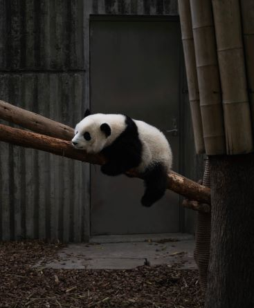
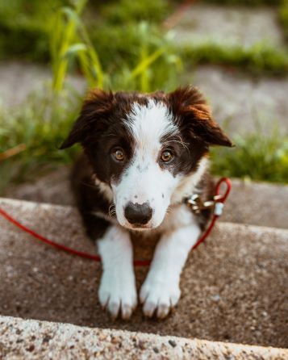

The reason I chose this photo is because I love hot pot and it's originated in my hometown.
visitPhoto by Ce Amtic from Unsplash
Image#2
I love pandas and it's originated from my city Chengdu and it's one of our symbol.
visit

Photo by Ningyu He from Unsplash
Image#3
I chose this photo because I have a boarder collie myself and I love them so much. This puppy is also breath taking cute.
visit

Photo by Josh Hild from Pexels
Image#4
One of my major is Informatics and data processing is a huge portion of what I do so I figure this somehow represent what I do
and possibly will do in the future.
visitPhoto by Luis Gomes from Pexels
Image#5
I love my hometown Chengdu and the night view of it is beautiful so that's why I chose this one.
visitPhoto by Yongzheng Xu from Unsplash
Image#6
This is the nine whole bridge in my city and it's a typical ancient Chinese style bridge also one of
our symbols of the city Chengdu.
visitPhoto by Zain Lee from Unsplash